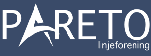
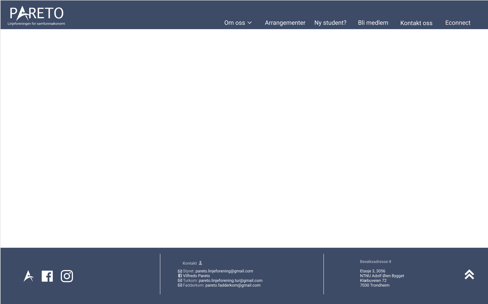
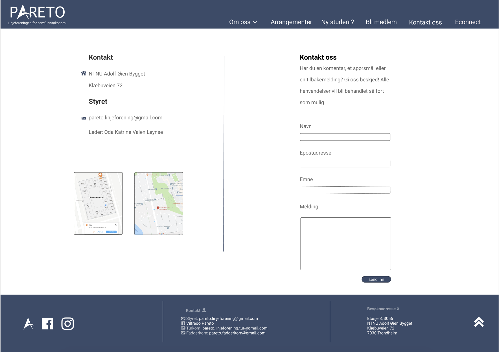
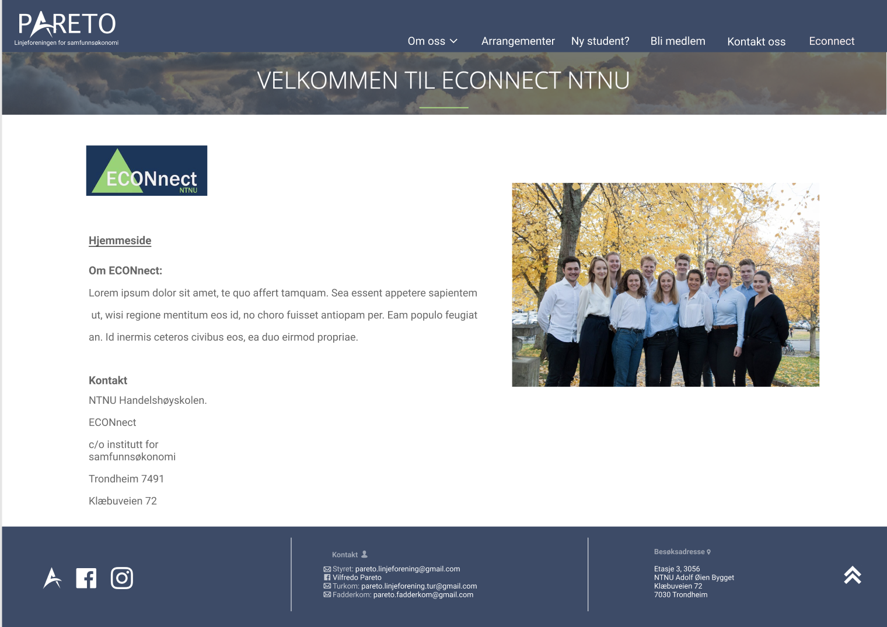

P2 Design Guidelines
Frida, Ingrid, Bjørn Are, Kristine, Hilde.
7. oktober 2019

Administrative details
- Vår klient: Linjeforeningen Pareto
- Kontaktperson: Oda Katrine Valen Leynse
Vår klient er linjeforeningen Pareto, som er linjeforeningen for samfunnsøkonomi og finansiell økonomi ved NTNU i Trondheim. Pareto er ansvarlig for å arrangere sosiale arrangementer for alle studentene. Dette inkluderer turer, fester, quizzer og andre begivenheter gjennom hele semesteret. De har ikke en nettside, så all informasjonen deres må gå gjennom andre kanaler, som Facebook, instagram og stands på campus. Det kan være litt kaotisk med informasjon som kommer fra så mange forskjellige steder. Derfor ønsker vi å lage en nettside for dem hvor de kan dele all sin informasjon og det er lett tilgjengelig for studenter å finne.

Purpose and goals and audience
Formålet med nettsiden er å spre informasjon om Pareto og tilbudene deres. Målet er å ha en felles plattform der medlemmer og potensielle nye medlemmer av Pareto kan finne informasjon om studentorganisasjonen, undergrupper, kommende arrangementer, og hvordan du kan bli medlem. Et annet mål er å ha et kontaktskjema slik at medlemmene kan sende inn spørsmål.
Navigation Structure
Her kommer et avsnitt.
Page Layout and Appearance
Da vi planla hvordan det generelle designet på nettsiden skulle se ut, var vi alle enige om at vi ville ha et brukervennlig og minimalistisk design. Siden de fleste som skal inn på nettsiden er studenter, antok vi at de ikke vil ha store utfordringer når det kommer til å manøvrere en nettside, og at de fleste som går inn på siden ville gjøre det for å finne informasjon om noe fort. Derfor prøver vi å ha et design som gjør at informasjon skal være rask og enkel å finne. Vi har derfor valgt å ha en navigasjonsbar på toppen av siden, og en knapp i footeren som automatisk skroller siden til toppen igjen, i tilleg til en logo som vil føre brukeren tilbake til hovedsiden når den blir trykket på, slik at man enkelt kan komme seg til alle sider fra hvor som helst på nettsiden. I tillegg har vi valgt å ha en navigasjonsbar uten så mye nedtrekksmuligheter, slik at det er lett oversiktlig hvor forskjellig informasjon er. Unntaket er under fanen "om oss" hvor vi vil ha en nedrekksmeny med "komiteer" og "vedtekter". Grunnen til at vi valgte å gjøre det sånn var at disse to sidene er sannsynligvis ikke sider folk er inne på så ofte slik at vi følte det ikke ville være nødvendig med en hel fane til det, samtidig som at det er ganske greit å forstå at disse to sidene er inn under informasjon.

- vi bruker skrifttypen roboto overalt, evt Arial hvis roboto ikke fungerer. I Navbaren bruker vi
skriftstørrelse 18 på hovedelementene, og 15 på elementene i nedtrekksmenyen. i Footeren vil skriften
være i størrelsen 12. skriftstørrelsen på resten av sidene vil avhenge av innholdet på siden.
- Vi har valgt en fargepalett som matcher logoen til linjeforeningen. Vi har derfor en navbar og en
footer som er i fargen #3A4B69, med all skrift på disse to i helt hvitt (#FFFFFF) eller i hvitt med
gjennomsiktighet, slik at det blir en blanding mellom hvitt og blånyansen. Bakgrunnen på siden vil
være helt hvit, med all skrift på den i svart (#000000), men med gjennomsiktiget, slik at det blir
en mer grånyanse. Nedrekksmenyen er også i #3A4B69, men med gjennomsiktighet slik at den også blir en blanding.
- Alle linkene vi har på nettsiden (Da alle elementene i navbaren og logoen i tillegg til de tre ikonene
nederst til venstre i footeren, og pilen til høyre) vil reagere når man hoverer over med musepekeren.
For elementene i navbaren vil de få en hvit strek under seg i tillegg til at nedrekksmenyen også vil
vises dersom man hoverer over "om oss". De tre ikonene nederst i footeren vil bli delvis gjennomsiktige
når man hoverer over dem. For Logoen i navbaren og pilen i footeren vil det ikke skje noe annet enn at
musepekeren viser at det er en link. Alt dette er illustrert ved bildet under.
- I footeren har vi først tre ikoner som linker til hhv. hjemmesiden, facebooksiden og instagramprofilen til Pareto. Så har vi informasjon om kontakt, da epostadresser og facebookbruker. Så har vi informasjon om hvor folk kan finne oss. Til slutt har vi en pil som, når man trykker på den, tar brukeren til toppen av siden. - Logoen vil være helt øvest i navbaren, og er logoen til linjeforeninen. Den vil også som nevnt være en klikkbar link som tar brukeren tilbake til hovedsiden uansett hvor man er.
Content
Nettsiden kommer til å ha ni forskjellige sider, det er da:
8. kontakt-oss.html
Denne siden vil ha informasjon om hvordan man kan komme i kontakt med linjeforeningen
i tillegg til at den vil ha et skjema med input-felt som brukeren kan sende inn spørsmål,
forespørsler eller kommentarer fra. Det vil da vær informasjon om hvor linjeforeningen
befinner seg fysisk (da adressen) med både mazemap og google maps, i tillegg til epostadressen
til linjeforeningen.
Mye av informasjonen på siden er gitt på andre steder, blant annet i footeren, men vi prøver
å lage nettsiden slik at man ikke må lete mye etter informasjon, og at man derfor kan finne
informasjon om forskjellige ting på flere steder, for at det skal gå så raskt og enkelt som
mulig
Vi har her også valgt å holde oss til et minimalistisk design, slik at alt er oversiktlig og
skal virke behagelig for brukeren å lese.

9. econnect.html
Denne siden vil ha informasjon om Econnect. Hva det er, hvordan du finner det, og hvordan du
kontakter dem. Øverst på siden, rett under navbaren, vil det være er stort banner hvor det står
"Velkommen til Econnect NTNU". Dette bildet er hentet fra nettsiden til Econnect, og vi valgte
å ha det med for å prøve å implementere litt av designet til econnect sin nettside inn i vår.
Videre har vi logoen til Econnect, den vil være en klikkbar link som tar deg med til nettsiden
deres. Under logoen skal vi ha enda en link til nettsiden, men denne skal være tydeligere at er
en link. Grunnen til at vi har to linker så nærme hverandre er at vi ville, igjen, prøve å gjøre
siden så enkel å bruke som mulig, slik at du lett kan komme deg dit du skal.
Under det skal vi ha litt informasjon om Econnect, hva de er og hva de gjør osv, i tillegg til
informasjon om hvor man finner dem. Til slutt har vi også et bilde av Econnect, for å få litt mer
farge på siden, i tillegg til å gjøre den mer hyggelig og innbydende.

Minimum Requirements
Her kommer et avsnitt.
Plan
Her kommer et avsnitt.